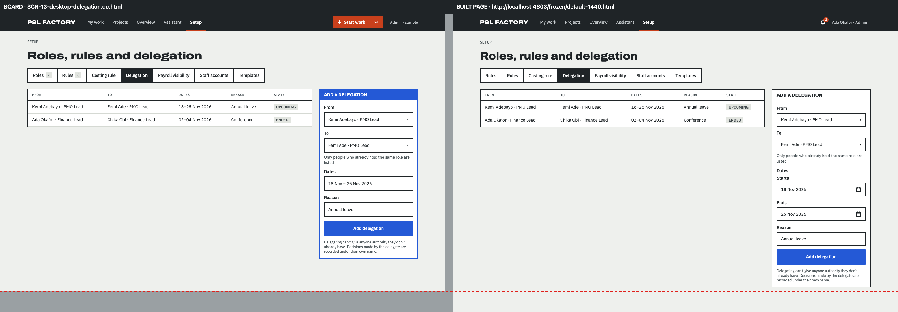
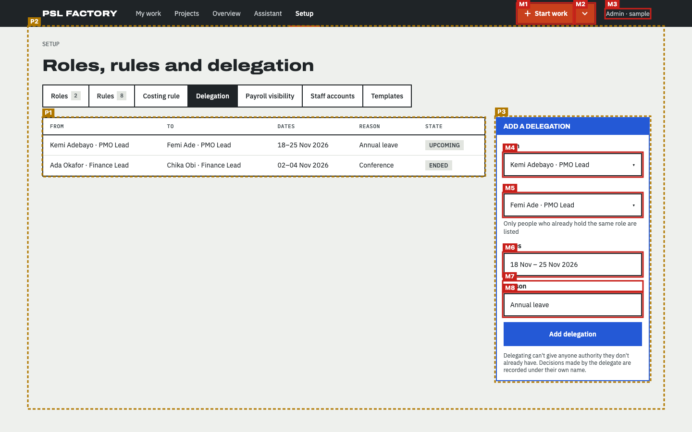
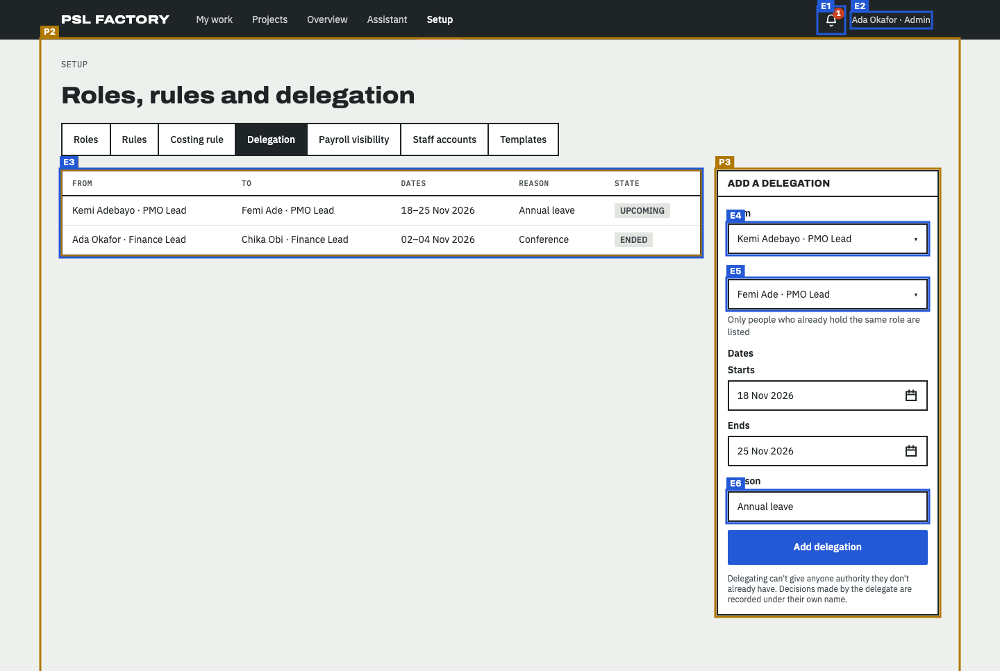
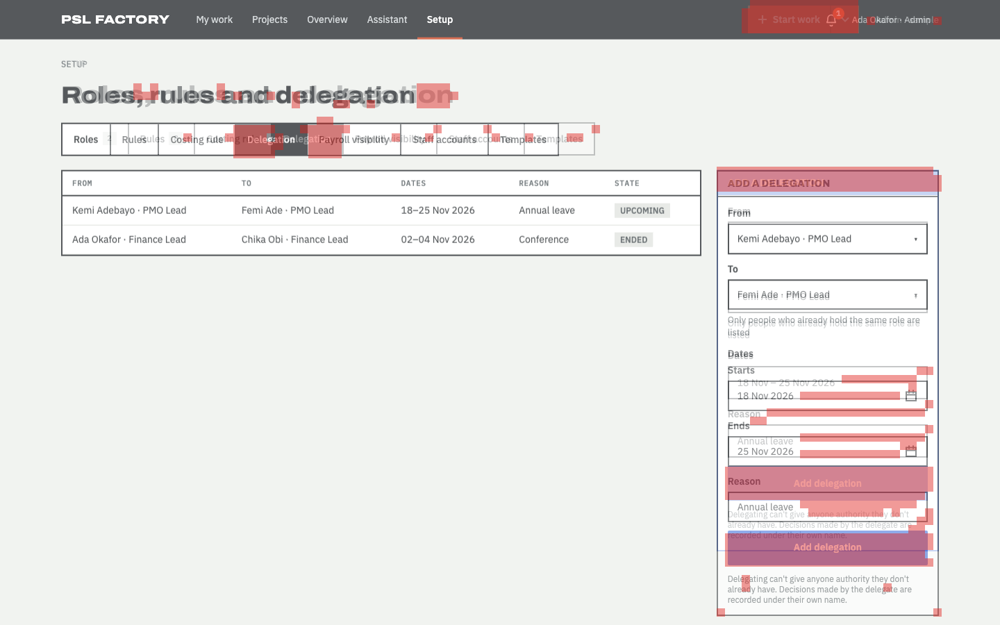

Does the built page follow the design?
Board SCR-13-desktop-delegation.dc.html compared with http://localhost:4803/frozen/default-1440.html at 1440px wide · 2026-11-17T08:35:24.634Z
- Every board item is on the page or approved as an exception (100%).
- Visual match 84 is below 90.
- 3 item(s) are in a different place; review them (not part of the pass rule unless --strict-position).
40 of 48 things drawn on the board were found on the page: headings, buttons, links, search and filter controls, table columns, labels and the repeated rows (counted once, not per row).
How closely the shapes line up: blocks, bars, tables and text areas, compared in 12px squares over the top 900px. Different words in the same place still count as a match, so sample data does not lower the score.
Missing from the built page 8
Drawn on the board but not found on the page. Each one must be built, or approved as an exception.
| # | What | Text on the board | Where on the board | Exception |
|---|---|---|---|---|
| M1 | Link | Start work | right, 8px down | approved Conflicts 9: Start work belongs to the shell (F-05); the admin persona has no startable lines, so the shell draws none. src/shell is not touched. As F-20 (D-71). · design engineer, 16 Nov 2026 — D-107 |
| M2 | Link | More ways to start | right, 8px down | approved Conflicts 9: as Start work. · design engineer, 16 Nov 2026 — D-107 |
| M3 | Text | Admin · sample | right, 20px down | approved Conflicts 9: the shell prints /me as name · roles ("Ada Okafor · Admin"). As F-20 (D-71). · design engineer, 16 Nov 2026 — D-107 |
| M4 | Text | Kemi Adebayo · PMO Lead ▾ | right, 319px down | approved Conflicts 2: the board draws From as a static box. The page draws the shared Select (D-91), offered only because the read sends two from_options; its accessible name is its label "From" and the chosen option shows inside it (the fidelity driver chooses Kemi Adebayo · PMO Lead with the real control). The value is on the page; the tool reads the control by its label. · design engineer, 16 Nov 2026 — D-107 |
| M5 | Text | Femi Ade · PMO Lead ▾ | right, 403px down | approved Conflicts 3: as From. To is the shared Select listing delegate_options for the chosen From; the driver chooses Femi Ade · PMO Lead, shown inside the control, named "To". · design engineer, 16 Nov 2026 — D-107 |
| M6 | Text | 18 Nov – 25 Nov 2026 | right, 527px down | approved Conflicts 5: the library has no range picker and E-DELEGATION sends starts and ends apart, so Dates is a fieldset (legend "Dates") of two DateFields, Starts 18 Nov 2026 and Ends 25 Nov 2026 as driven. The single range text is not drawn. · design engineer, 16 Nov 2026 — D-107 |
| M7 | Text | Reason | right, 587px down | approved Conflicts 5 (the library's fields): Reason is the shared TextField, whose label is a <label> element; the tool skips label elements. The word is on the page as the field's visible label. · design engineer, 16 Nov 2026 — D-107 |
| M8 | Text | Annual leave | right, 611px down | approved Conflicts 5 (the library's fields): in the panel the board draws the reason as a static box; the page holds it as the typed value of the Reason TextField (the driver types it). The table row's "Annual leave" is matched separately. · design engineer, 16 Nov 2026 — D-107 |
In a different place 3
Found on both, but in a different order, side of the page, or area (for example inside the table frame instead of above it).
| # | What | How it moved |
|---|---|---|
| P1 | Table |
|
| P2 | Main area |
|
| P3 | Side panel |
|
Looks different 2
Found on both, but styled differently: table rows and cells, fonts, colours, underlines, outlines, corners. Not part of the score; check each one against the board.
| What | Difference |
|---|---|
| Text "ADD A DELEGATION" |
|
| Link "Add delegation" |
|
On the page but not on the board 6
Built but not drawn. Some are expected (data, status lines); the rest need the design engineer to approve or remove them.
| # | What | Text on the page | Where on the page |
|---|---|---|---|
| E1 | Button | Alerts, 1 unread | right, 11px down |
| E2 | Text | Ada Okafor · Admin | right, 19px down |
| E3 | Section | Delegations | middle, 245px down |
| E4 | Drop-down | From | right, 322px down |
| E5 | Drop-down | To | right, 402px down |
| E6 | Text field | Reason | right, 708px down |
Pictures
The red dashed line on the side-by-side marks how far down the visual score looks. On the marked board, red boxes are missing items (M). On the marked page, amber boxes moved (P) and blue boxes are extra (E). In the difference picture both screens are laid over each other and red squares are where the shapes do not line up.






Notes about this run
- Images: /_blob/ images are served from /Users/Hunchoo/psl-factory/design/mascots/canvas-assets.json (19 mapped).
Found on both (40)
| Navigation area | Main | |
| Text | PSL FACTORY | |
| Link | My work | |
| Link | Projects | |
| Link | Overview | |
| Link | Assistant | |
| Link | Setup | |
| Main area | ||
| Text | SETUP | |
| Heading | Roles, rules and delegation | |
| Tabs | Setup | |
| Tab | Roles 2 | page: Roles |
| Tab | Rules 8 | page: Rules |
| Tab | Costing rule | |
| Tab | Delegation | |
| Tab | Payroll visibility | |
| Tab | Staff accounts | |
| Tab | Templates | |
| Table | page: Delegations | |
| Table column | FROM | |
| Table column | TO | |
| Table column | DATES | |
| Table column | REASON | |
| Table column | STATE | |
| Text | Kemi Adebayo · PMO Lead | |
| Text | Femi Ade · PMO Lead | |
| Text | 18–25 Nov 2026 | |
| Text | Annual leave | |
| Text | Ada Okafor · Finance Lead | |
| Text | Chika Obi · Finance Lead | |
| Text | 02–04 Nov 2026 | |
| Text | Conference | |
| Side panel | page: Add a delegation | |
| Text | ADD A DELEGATION | |
| Text | From | |
| Text | To | |
| Text | Only people who already hold the same role are listed | |
| Text | Dates | |
| Link | Add delegation | |
| Text | Delegating can't give anyone authority they don't already have. Decisions made by the delegate are recorded under their own name. |
How the scores are worked out
Element coverage. The board is drawn locally from its own template and sample data. From the drawn board the check lists everything a person sees or uses: page areas (navigation, main, search), headings, links, buttons, form fields with their labels, table column headers, filter, search and pagination controls and fixed labels. Rows drawn from sample data count once, as a pattern ("table rows with these columns"). Each item is looked for on the page by its kind and its words (ignoring capitals, curly quotes and small wording differences, at least 80% similar). Coverage is found ÷ drawn. Order is compared in reading order (top to bottom, left to right); an item is "moved" when it breaks the order, sits on the other side of the page, or sits inside a different area.
Visual match. Both full-page screenshots are compared in 12px squares after a light blur, over the board's height (900px; the page is 967px). Only squares with something in them count. A square matches when its colours line up, or when both have text or lines there. Score = matching ÷ counted squares (2750 of 3274). Over every square including empty background it would be 94.2.
Technical details
Board file: /Users/Hunchoo/psl-factory/design/canvas/project/SCR-13-desktop-delegation.dc.html
Viewport: 1440×900
Report data: report.json
Exceptions file: /Users/Hunchoo/psl-factory/delivery/features/F-27/fidelity-exceptions.json